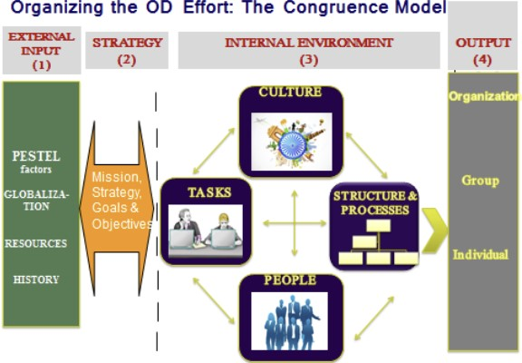

Situation Analysis
Theranos was a privately-owned biotech start-up based in Palo Alto, California, United States. It was founded in 2005 by Elizabeth Holmes, a 19-year-old chemical engineering student who dropped out of Stanford University with aspirations of revolutionizing the healthcare industry through technological innovations in blood testing and becoming a billionaire. At its peak, the company was valued at $9 billion, but it eventually dissolved in September 2018 with a value below zero.
In 2013, Theranos established its first blood collection sites in Palo Alto and two locations in Phoenix, Arizona. The company employed approximately 700-900 staff, including Sunny Balwani as the president and COO. Its board comprised high-profile individuals with strong connections to political figures in the United States. Quest Diagnostics and LabCorp, which held significant market share, posed as major competitors for Theranos. Nevertheless, the start-up managed to form powerful alliances with renowned pharmaceutical entities such as Walgreens, CVS, Safeway, and the U.S. Department of Defense (DOD).
Theranos aimed to develop a prototype that would revolutionize blood testing by eliminating the need for needles, utilizing smaller blood samples, providing rapid results, and enabling testing at home. However, the company encountered various setbacks in realizing this vision. The initial design, a medical patch for diagnosing and treating medical conditions, proved unsuccessful, leading to the development of other failed inventions such as the cartridge-and-reader blood analyzer called the Edison, and later, the MiniLab.
Theranos operated within an industry where most companies exhibited characteristics of traditional organizations and heavily relied on government support, technological advancements, and socio-economic conditions. According to the World Health Organization (WHO), the healthcare industry in the U.S. is one of the largest and most complex. In 2015, the country spent over $3.2 trillion on healthcare, primarily funded through public funds and various insurance coverage options, including individual and private employer-based plans.
Moreover, the healthcare industry faced stringent regulations, making it the most highly regulated sector in the U.S. The Department of Health and Human Services (DHHS) and agencies like the Centers for Medicare & Medicaid Services and the Food and Drug Administration (FDA) played crucial roles in monitoring and regulating the industry. Failure to comply with government regulations and agency requirements could result in civil and criminal cases, financial penalties, exclusion from healthcare programs, and potential prohibitions or restrictions on services, all of which would significantly harm the company’s reputation and potentially lead to its dissolution.
The healthcare industry was subject to technological advancements and the introduction of new products. Strong competition existed, making intellectual property protection and partnerships crucial for the success of the innovation business model. The ability to develop, acquire, or license new and improved technologies would be key determinants of a company’s success. In the absence of such advancements or in the event of adverse effects, the company’s testing methods could become obsolete. Therefore, validation of the scientific base, expertise in clinical testing, manufacturing, risk reduction, and acquisition of necessary resources and approvals were essential for developing and advancing their science.
These organizations were also affected by socio-economic factors that influenced health disparities and people’s spending behavior. Factors such as inflation, unemployment, interest rates, salary inequality, age, marital status, food and housing security, and poverty rates played significant roles. Individuals facing unemployment were less likely to afford medical costs, including emergency visits or routine lab tests. Consequently, the price of services or products often served as a critical factor when selecting a healthcare provider.
Analysis
To analyze Theranos, I will employ the Nadler-Tushman Congruence Model, which offers a comprehensive framework for evaluating the organization’s performance. This model considers essential elements including strategy, critical tasks, structure and processes, people, and culture. By examining these interconnected aspects, we can gain a holistic understanding of the company’s operations and their alignment.

Strategy:
The article does not explicitly mention Theranos’ operational objectives, strategy, values, and mission. However, it can be inferred that the organization aimed to prioritize innovation and maximize shareholder value. Theranos Inc utilized the blue ocean strategy to explore untapped market spaces, where competition was limited or non-existent. Instead of engaging in head-to-head battles in existing competitive markets, the company aimed to create new demand and establish itself as a pioneer in innovative healthcare solutions.
Structure and Processes:
According to the Fuller and Maski article, Theranos had a hierarchical structure with departments organized based on their respective functions, resulting in high work specialization. The organization comprised a Board of Directors, a CEO, a COO, a human resources department, a laboratory, and an engineering unit. These units operated as silos, and in some cases, there was a sense of rivalry among them. The article lacks information regarding the size of each department and the span of control.
The authors also suggest the existence of weak linking mechanisms within the organization due to Holmes’ obsession with maintaining tight control over information flow and the company’s narrative. Decision-making was centralized and top-down, with Holmes being the primary decision-maker. Communication channels like instant messaging were prohibited, and emails and computer programs were compulsively monitored, leading to reports containing misleading information.
Regarding alignment mechanisms at Theranos, the article does not provide details about the systems the company used to measure performance, manage talent, or provide rewards and incentives at the individual and group levels. However, based on the article, there seemed to be a policy of dismissal or marginalization if employees failed to meet Holmes’ expectations, which included following orders, working long hours, and demonstrating critical abilities and discretion. Additionally, the selection process seemed to rely on the leader’s social and family connections, the reputation of employees, and their susceptibility to manipulation.
Culture and Leadership:
The culture at Theranos was characterized by secrecy, fear, and control. Psychological safety was absent, and employees tended to work in isolation, avoiding eye contact and distrusting others. They feared retaliation from Holmes and Balwani, who were also involved in a secret romantic relationship. The leadership styles of both individuals were authoritarian, abusive, and micromanaging. Holmes used a baritone voice and maintained an unwavering gaze that conveyed a sense of intensity.
Employees faced humiliation and threats of legal action if they disobeyed orders or expressed disagreement with the company’s philosophy. The culture also exhibited hypersensitivity towards intellectual property and a paranoia regarding information leakage, necessitating the signing of confidentiality and nondisclosure agreements.
It is worth mentioning that Theranos was situated in Silicon Valley, a place known for slogans like “Fake it until you make it” and “Fail Fast.” The culture at Theranos was influenced by Apple and its CEO, with Holmes being particularly obsessed with Steve Jobs and his illusory effect.
Critical Task:
While the article does not explicitly outline Theranos’ workflow, critical tasks within the organization were identified in the engineering and laboratory departments. The engineering department was responsible for developing a compact product and ensuring the interaction of all elements as expected. The laboratory department focused on creating the necessary chemical reactions for analyzing blood samples. These tasks were complex, and each unit operated independently.
People:
The leaders and members of the Board of Directors lacked formal scientific training and had no prior experience in biotechnology or healthcare, with the exception of two physician Board members. Most Board members were older men with backgrounds in politics and the military, and they had close connections to the CEO. The workforce consisted of renowned scientists and engineers, interns, recent graduates, and immigrants holding H1-B visas.
After analyzing the elements of the Congruence model, it can be concluded that there was a lack of congruence among them. If Theranos’ products had worked and been certified, the strategy could have aligned with a blue ocean approach, revolutionizing the market through innovation.
Recommendations
Terminate Elizabeth Holmes and Sunny Balwani: The Board of Directors should promptly develop a comprehensive termination plan that includes clear justifications for this decision, performance evaluations, and the necessary skills and knowledge required in new leadership. A communication plan should be established to inform all stakeholders impacted by this change, ensuring clarity and authoritative communication. The Board should also identify an interim CEO for the transition period and define the legal framework for the dismissal process. Following this transition, a robust hiring process should be implemented to select a new leader, with clearly communicated expectations and a formal performance review process.
Strengthen Linking Mechanisms: The new leadership team should prioritize the establishment of effective linking mechanisms within the organization. This can be achieved by creating liaison roles and forming cross-functional teams consisting of at least two members from each department. Regular meetings of these teams should be conducted to address specific problems and generate innovative ideas for new technologies. Utilizing technology such as enterprise resource planning (ERP), chat platforms, and other collaboration tools will facilitate information sharing and improve interdepartmental visibility.
Foster a Culture of Transparency and Inclusion: Leaders must actively work to earn the trust of employees and create a culture of transparency and inclusion. This can be accomplished by providing consistent and honest communication, delegating responsibilities, and promoting a participatory and inclusive decision-making process. Creating spaces for listening and understanding within the organization is essential. Initiatives such as retreats, focus groups, Q&A sessions, employee surveys, and incentivizing creativity and teamwork can contribute to fostering an environment of trust and open communication.
Halt Product Commercialization: Theranos should immediately cease the marketing of its products, recall those already on the market, and develop a comprehensive marketing plan. Establishing a dedicated control design unit with cross-functional teams will ensure strict oversight of facilities, equipment, design, and manufacturing processes. Prior to relaunching the product, obtaining approvals from relevant regulatory entities is crucial. A soft launch strategy should be adopted, accompanied by continuous monitoring to ensure compliance with industry requirements. Analytical and assessment tools, such as The Congruence Model, Process Analytical Technology (PAT), Design of Experiments, Risk Assessments, and Corrective and Preventive Actions (CAPA), should be utilized to enhance product quality and regulatory compliance.
By implementing these recommendations, Theranos can begin to address its performance and reputation challenges, foster a more transparent and inclusive culture, and establish a solid foundation for future growth and compliance with industry standards.
Reference
Carreyrou, J. (Year). Bad Blood (p.183).
Fuller, T., & Masko, J. (Year). Theranos: The Unicorn that Wasn’t (The Unicorn, p.10).
Fuller, T., & Masko, J. (Year). Theranos: The Unicorn that Wasn’t (Exhibit 5 “Timeline of Theranos Publicity and Exposure” Industry Flash Report – Laboratory Services November 2016). Retrieved from link
Country Report: United States of America. (Year). Health Expenditures (p.2). Retrieved from link
Country Report: United States of America. (Year). Social Determinants of Health (p.1). Retrieved from link
Author(s) or Organization. (Year). A Guide to Healthcare Compliance Regulations [Description]. Retrieved from link
Country Report: United States of America. (Year). Monitoring the Health System’s Organization, Provision of Care, and Performance (p.2). Retrieved from link
Author(s) or Organization. (Year). Pharmaceutical product development: A quality by design approach. Retrieved from link
Country Report: United States of America. (Year). Overall Context of the Healthcare Industry. Social Determinants of Health. Retrieved from link
Please note that the provided links are active and can be accessed directly for further reference.